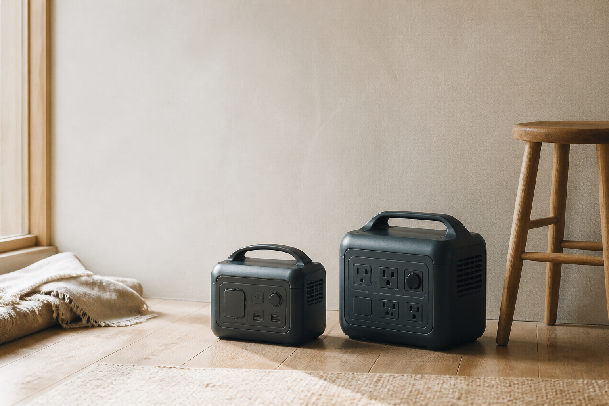

FIELD GUIDE — PORTABLE POWER
ポータブル電源を、
容量より先に
暮らしから選ぶ。
停電への備えと、週末の持ち出し。必要な容量も、許容できる重さも同じではありません。

01 INTRODUCTION
「大きいほど安心」
とは限りません。
この記事では、同じ売り場に並ぶ2つのモデルを、公式仕様、保証、持ち運びやすさの順に見ていきます。価格の安さや人気順ではなく、使う場所と運ぶ頻度が、最初の分かれ目になります。
先に決めることは、使いたい家電と、保管場所からの距離。
02 THE SHORT ANSWER
条件ごとの、短い結論。
03 WHO THIS IS FOR
この記事が役立つ人、役立たない人。
役立つ人
- 家庭の備えや持ち出しに使う
- 容量・出力・重量を同じ基準で見る
- 最安値より、用途との相性を優先する
役立たない人
- 業務用・医療用途の電源を探している
- 第三者の実機試験だけで選びたい
- 現在の最安値だけを知りたい
04 HOW WE COMPARED
選ぶ前に、
方法を公開する。
比較日は2026年8月29日。価格と在庫は固定値にせず、遷移先での確認を前提にします。
- A候補に含めた条件
- 国内流通 / 公式仕様 / 保証窓口を確認できる
- B比較した軸
- 容量 / 定格出力 / 重量 / 保証 / 不明値
- C除外した条件
- 商品同定が未解決 / 保証窓口を確認できない
- D不明値の扱い
- 推測しない / 空欄にしない / 確認日を残す
05 AT A GLANCE
違いを、一枚で見る。
差がある項目のみ、細い陶土色の罫線で示します。
| 比較軸 | MODEL A | MODEL B | 判断の手がかり |
|---|---|---|---|
| 容量 | 512Wh合成fixture | 768Wh合成fixture | 長時間の備えはB |
| 定格出力 | 600W合成fixture | 1000W合成fixture | 使う家電の幅はB |
| 重量 | 約6.1kg合成fixture | 約8.4kg合成fixture | 持ち運びはA |
| 保証 | 5年* | 5年* | 登録条件を確認 |
| 静音性 | 未確認 | 公式値あり | 不明値は推測しない |
MODEL A
運ぶことを優先
- 容量
- 512Wh
- 定格出力
- 600W
- 重量
- 約6.1kg
- 保証
- 5年*
- 静音性
- 未確認
MODEL B
容量と出力を優先
- 容量
- 768Wh
- 定格出力
- 1000W
- 重量
- 約8.4kg
- 保証
- 5年*
- 静音性
- 公式値あり
* メーカー登録などの条件があります。掲載値はすべてローカル表示確認用の合成値です。
06 TWO PORTRAITS
二つの道具を、暮らしの目線で読む。
MODEL A / PORTABLE
運ぶことを、負担にしない。
強みは、数字の大きさではなく、持ち出せること。容量を欲張らず、日常の延長で扱いたい人に合います。
- 向く人
- 車や家の中で持ち運ぶ機会が多い
- 向かない人
- 高出力家電を同時に長く使いたい
価格・在庫は遷移先で確認してください。ローカル表示のため外部遷移は無効です。
楽天市場で価格・在庫を見るMODEL B / CAPACITY
備えに、ひとつ余白を持つ。
容量と出力の余裕が、使える家電の幅につながります。据え置きを前提にできるなら、重さは弱点になりにくい。
- 向く人
- 家に据え置き、容量と出力を優先する
- 向かない人
- 階段や徒歩で持ち運ぶ機会が多い
価格・在庫は遷移先で確認してください。ローカル表示のため外部遷移は無効です。
楽天市場で価格・在庫を見る07 EDITOR'S NOTE
なぜ、この二つを残したのか。
候補を増やすほど、選択肢は豊かに見えます。しかし、用途の違いを説明できない商品を並べることは、比較ではなく陳列です。
モデルAは「運べること」、モデルBは「余裕を持てること」が、選ぶ理由になります。
人気順位、報酬率、販売者の広告表現は選定根拠に含めていません。
NOTES & SOURCES
出典と確認記録。
- 1
ローカルfixture モデルA 製品仕様想定容量・出力・重量・保証 / 合成値 / 2026.08.29
- 2
ローカルfixture モデルB 製品仕様想定容量・出力・重量・保証 / 合成値 / 2026.08.29
- 3
楽天CTA表示確認外部遷移なし / 購入時の注意文とアクセシブルネームを確認
更新履歴 2026.08.29 Editorial V2 ローカル版を作成編集方針と情報更新の基準 →